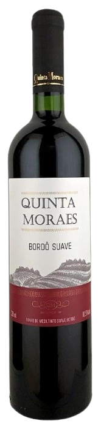
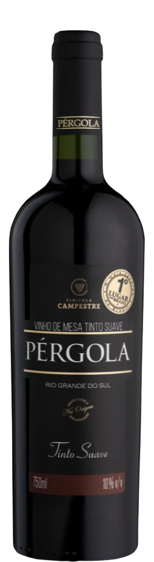
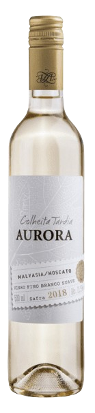
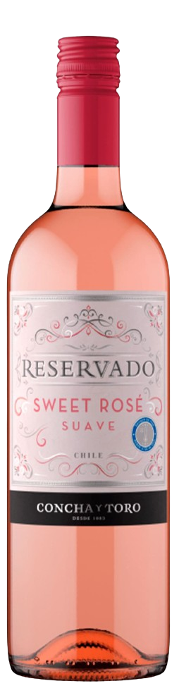
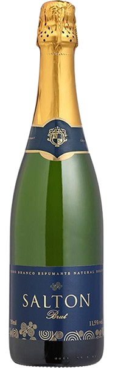

Robustez e história em cada gole. Nossos Vinhos Tintos são encorpados e marcantes, apresentando taninos presentes e notas de frutas escuras. São a escolha ideal para acompanhar carnes vermelhas e pratos intensos em momentos que exigem personalidade.
Vinho Tinto Suave Bordô
Um exemplar clássico e equilibrado, produzido pela Quinta Moraes em garrafa de 720ml. Este Bordô destaca-se pelo sabor adocicado e frutado, sendo uma excelente porta de entrada para quem prefere vinhos menos secos e mais fáceis de beber.

Tipo: Tinto Suave
Marca: Quinta Moraes
Volume: 720ml
Preço Médio: R$ 68,25
Vinho Tinto Suave Pérgola
Produzido pela renomada Vinícola Campestre, este Pérgola de 750ml é um dos vinhos mais queridos do Brasil. Apresenta coloração intensa e aromas típicos da uva Isabel, com um paladar macio e doce, ideal para acompanhar sobremesas ou momentos descontraídos.

Tipo: Tinto Suave
Marca: Pérgola (Vinícola Campestre)
Volume: 750ml
Preço Médio: R$ 25,50
Vinhos Brancos
O frescor e a elegância perfeitos para um almoço ensolarado. Nossa seleção de brancos traz sabores cítricos e frutados com uma leveza refrescante, elevando a experiência de qualquer refeição.
Vinho Branco Chardonnay
Este Chardonnay Reserva de 750ml é produzido pela renomada Concha y Toro. Apresenta um caráter único e estruturado, com aromas marcantes de abacaxi e pêssego. Devido à sua breve passagem por barricas, revela toques sutis de avelã e baunilha, sendo a escolha ideal para acompanhar peixes grelhados e massas com molhos cremosos.
Tipo: Branco Seco (Reserva)
Marca: Casillero del Diablo (Concha y Toro)
Volume: 750ml
Preço Médio: R$ 38,90
Vinho Branco Suave Colheita Tardia
Um clássico nacional da Aurora, este exemplar de 500ml é elaborado com uvas colhidas no outono em seu ponto máximo de maturação. Oferece um paladar aveludado e doce, com notas que remetem a mel e flores brancas. Harmoniza perfeitamente com sobremesas como torta de limão ou queijos de sabor forte como o gorgonzola.

Tipo: Branco Suave / Sobremesa
Marca: Aurora
Volume: 500ml
Preço Médio: R$ 31,99
Vinhos Roses
A leveza necessária para celebrar a vida e as boas companhias. Com sua coloração rosada e notas vibrantes de morango e melancia, nosso Rosé é a definição de um momento descontraído. Ideal para aperitivos ou para brindar em dias quentes com amigos.
Vinho Rosé Reservado Sweet Suave
Produzido no Chile pela renomada Concha y Toro, este exemplar de 750ml destaca-se por sua coloração rosada brilhante e aromas de frutas vermelhas frescas. Com um paladar suave e adocicado, é a escolha perfeita para quem busca um vinho leve e refrescante. Harmoniza muito bem com sobremesas à base de frutas, queijos leves ou pode ser servido apenas com gelo em momentos de lazer.

Tipo: Rosé Suave
Marca: Concha y Toro
Volume: 750ml
Preço Médio: R$ 34,90
Vinho Rosé de Portugal
Vindo da tradicional região dos Vinhos Verdes em Portugal, este exemplar de 750ml da marca Casal Garcia é um ícone de frescor. Apresenta uma leve efervescência natural e notas marcantes de morango e framboesa. É a companhia ideal para comida japonesa, saladas de verão ou pratos leves à base de peixe.
Tipo: Rosé Meio Seco (Vinho Verde)
Marca: Casal Garcia
Volume: 750ml
Preço Médio: R$ 59,90
Espumantes
O brilho das celebrações que merecem um brinde inesquecível. Nosso Espumante Brut combina frescor e sofisticação, com borbulhas persistentes que tornam qualquer evento uma grande ocasião. Perfeito para recepções, comemorações e momentos de pura alegria.
Espumante Salton Brut
Produzido pela tradicional Família Salton na Serra Gaúcha, este exemplar de 750ml é um dos espumantes brasileiros mais premiados do mundo. Apresenta uma coloração amarelo-palha com reflexos esverdeados e aromas que remetem a flores brancas e frutas cítricas. Com um paladar refrescante e excelente acidez, é a escolha ideal para acompanhar canapés, queijos suaves ou celebrar momentos de pura alegria.

Tipo: Espumante Branco Brut
Marca: Salton
Volume: 750ml
Preço Médio: R$ 41,80
Espumante Moscatel
Elaborado pela Casa Perini, este exemplar de 750ml foi eleito o 5º melhor vinho do mundo em 2017. É um espumante doce, aromático e extremamente leve, com notas intensas de mel e flores de laranjeira. Por ser um vinho suave, é a companhia perfeita para sobremesas, bolos de festas ou para ser apreciado gelado em tardes de celebração com a família.